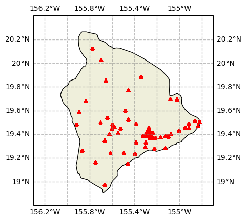
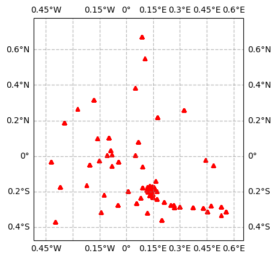

Travel-time data file¶
The travel-time data can be obtained from the observed surface wave dispersion. The travel-time data should be stored in a csv file with the following columns:
tt: travel time from the source to the receiverstaname: station namestla: latitude of the stationstlo: longitude of the stationevtname: event nameevla: latitude of the eventevlo: longitude of the eventperiod: period of the surface waveweight: weight of the travel-time datadist: distance between the source and receiver (optional)vel: phase or group velocity of the surface wave (optional)
A template of the travel-time data file can be found here.
Rotate receiver locations by a given angle¶
Command surfatt_rotate_src_rec¶
The surfatt_rotate_src_rec command is used to rotate the location of sources and receivers by a given angle. The command is called as follows:
Usage: surfatt_rotate_src_rec -i src_rec_file -a angle [-o out_src_rec_file]
Rotate source and receiver locations by a given angle (anti-clockwise)
required arguments:
-i src_rec_file Path to src_rec file in csv format
-a angle Angle in degree to rotate source and receiver locations
-c clat/clon Center of rotation in latitude and longitude
optional arguments:
-o out_file Output file name, defaults to src_rec_file "_rot" appended
The surfatt_rotate_src_rec command reads the source and receiver locations from the input file src_rec_file and rotates them by the given angle angle (in anti-clockwise degrees) about the center of rotation clat/clon. The rotated source and receiver locations are written to the output file out_src_rec_file. If the output file is not specified, the rotated source and receiver locations are written to a file with the name src_rec_file appended with _rot.
Example¶
In the following example, the source and receiver locations are rotated by -30 degrees about the center of rotation (19.5, -155.5) and written to the output file src_rec_file_rotated.csv. To illustrate this example, we use Jupyter Notebook to invoke the surfatt_rotate_src_rec command, and plot the original and rotated source and receiver locations.
Note
This Jupyter Notebook example can be found here.
First, we import the required Python packages:
import pandas as pd
import matplotlib.pyplot as plt
import cartopy.crs as ccrs
import cartopy.feature as cfeature
A function to plot the source and receiver locations is defined as follows:
def plot_basemap(region, feature=True):
fig = plt.figure()
ax = fig.add_subplot(1, 1, 1, projection=ccrs.Mercator())
ax.set_extent(region, crs=ccrs.PlateCarree())
gl = ax.gridlines(crs=ccrs.PlateCarree(), draw_labels=True,
linewidth=1, color='gray', alpha=0.5, linestyle='--')
if feature:
ax.coastlines()
# plot land
ax.add_feature(cfeature.LAND)
return ax
Next, we read the source and receiver locations from the input file src_rec_file.csv and plot them:
sr = pd.read_csv('src_rec_file.csv')
ax = plot_basemap([-156.3, -154.7, 18.8, 20.4])
ax.plot(sr['stlo'], sr['stla'], 'r^', markersize=5, transform=ccrs.PlateCarree())

The source and receiver locations are then rotated by -30 degrees about the center of rotation (19.5, -155.5) and written to the output file src_rec_file_rotated.csv:
! surfatt_rotate_src_rec -i src_rec_file.csv -a -30 -c 19.5/-155.5 -o src_rec_file_rotated.csv
Finally, we read the rotated source and receiver locations from the output file src_rec_file_rotated.csv and plot them:
sr_rotated = pd.read_csv('src_rec_file_rotated.csv')
minx = sr_rotated['stlo'].min()
maxx = sr_rotated['stlo'].max()
miny = sr_rotated['stla'].min()
maxy = sr_rotated['stla'].max()
marginx = (maxx - minx) * 0.1
marginy = (maxy - miny) * 0.1
region = [minx - marginx, maxx + marginx, miny - marginy, maxy + marginy]
ax = plot_basemap(region, feature=False)
ax.plot(sr_rotated['stlo'], sr_rotated['stla'], 'r^', markersize=5, transform=ccrs.PlateCarree())
